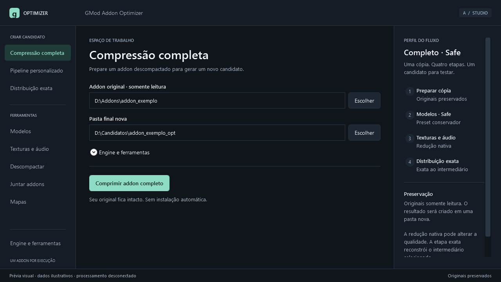

GMod Addon Optimizer · Escolha de design
Três apresentações desenhadas pelo Astra e renderizadas diretamente em WPF. São layouts de aprovação, isolados do programa atual. Os controles mostrados nas imagens não executam operações; o motor será conectado após sua escolha.

Navegação lateral, área de trabalho limpa e resumo da operação: a opção equilibrada entre simplicidade e controle.
As três organizações lado a lado
Referência: área de conteúdo de 1280 × 720 unidades WPF, renderizada a 96 DPI. A moldura nativa da janela varia com o Windows. Os mesmos XAML acompanham a apresentação para preservar o desenho aprovado; redimensionamento e escala de tela serão tratados na implementação. Estados de execução e resultado são ilustrativos, não novas medições ou aprovações de candidatos.
Especificação das opções · Análise da interface atual e escopo